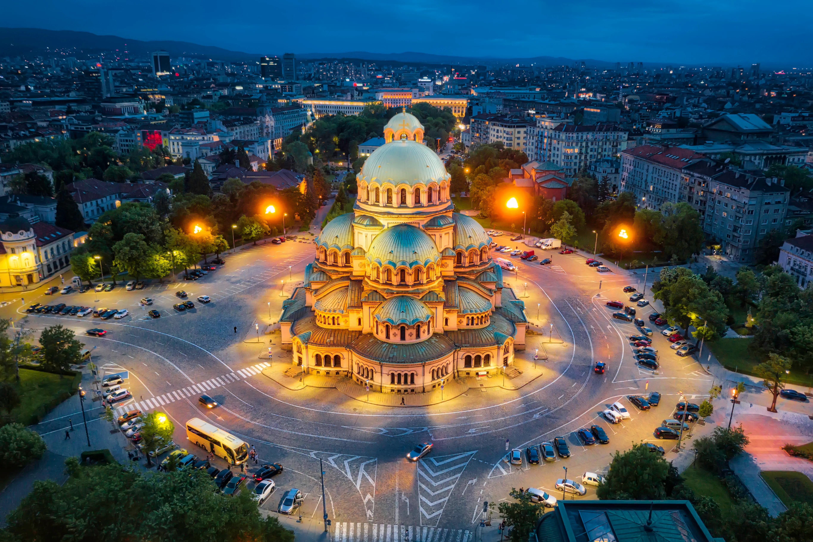
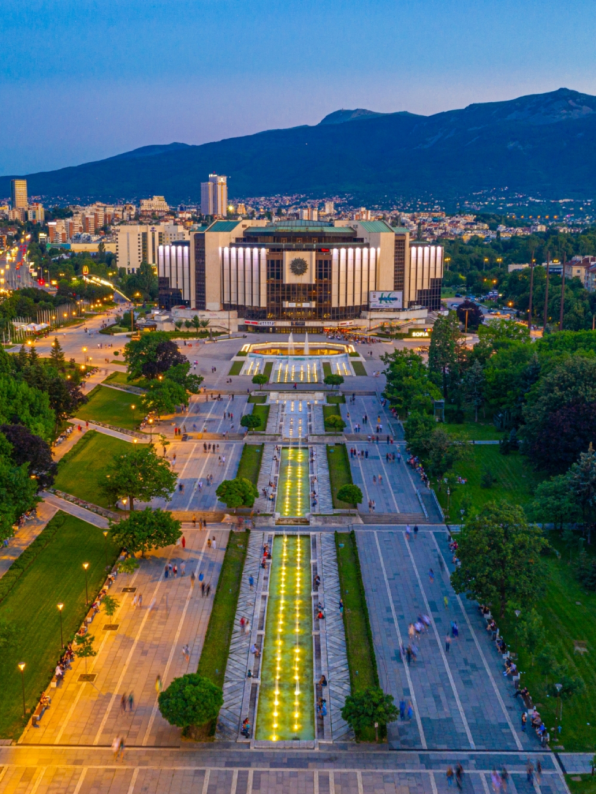
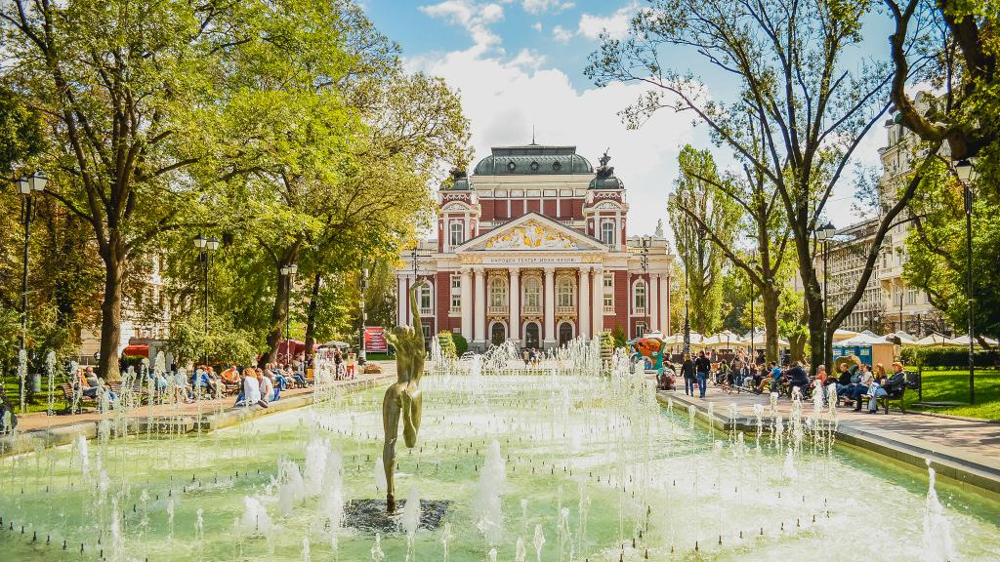

HELLO FREND!!! :) I STOLE YOUR WEBSITE
SOFIA - the Capital of Bulgaria

POPULATION: 1.2 million
AREA: 492km²
Historical Significance:
Ancient History: Sofia is one of the oldest capital cities in Europe, with a history that dates back over 2,000 years. It was originally a Thracian settlement named Serdica, founded around 7th century BC.
Roman Influence: It became a significant Roman city under Emperor Trajan in the early 2nd century AD. Many Roman ruins, such as the St. George Rotunda and the Amphitheater of Serdica, are still visible in the city today.
Cultural Hub:
Religious Diversity: Sofia is known for its religious diversity and tolerance. The city has churches, mosques, and synagogues, including the Alexander Nevsky Cathedral, one of the largest Eastern Orthodox cathedrals in the world.
Museums and Galleries: Sofia hosts numerous cultural institutions, including the National Archaeological Museum, the National Art Gallery, and the National Palace of Culture, which is the largest multifunctional conference and exhibition center in Southeastern Europe.
Geography and Nature:
Vitosha Mountain: The city is located at the foot of Vitosha Mountain, which is a popular destination for hiking, skiing, and other outdoor activities. Vitosha Nature Park is one of the oldest nature parks in the Balkans.
Hot Springs: Sofia has several mineral springs that have been used for health and relaxation since ancient times.
Modern Development:
Economic Center: Sofia is Bulgaria's economic hub, home to major international companies, financial institutions, and IT firms. It is considered one of the fastest-growing cities in Europe in terms of GDP per capita.
Transportation: The city has a well-developed public transportation system, including buses, trams, trolleybuses, and a metro system. Sofia Airport is the main international gateway to Bulgaria.
Education and Innovation:
Universities: Sofia is home to several major universities, including Sofia University "St. Kliment Ohridski," the oldest and most prestigious university in Bulgaria, founded in 1888.
Innovation and Startups: The city has a vibrant startup scene and is recognized as an emerging hub for technology and innovation in Eastern Europe.
>Cultural Events:
Sofia Film Fest: An annual event that attracts filmmakers and cinema enthusiasts from around the world.
Sofia Music Weeks: An international music festival that features classical music performances and is one of the city's most significant cultural events.


...
For more information about this amazing city visit this site:
Visit Sofia Infos
For Information about Kiew (capital of Ukraine) visit this site:
Visit Kiew Infos